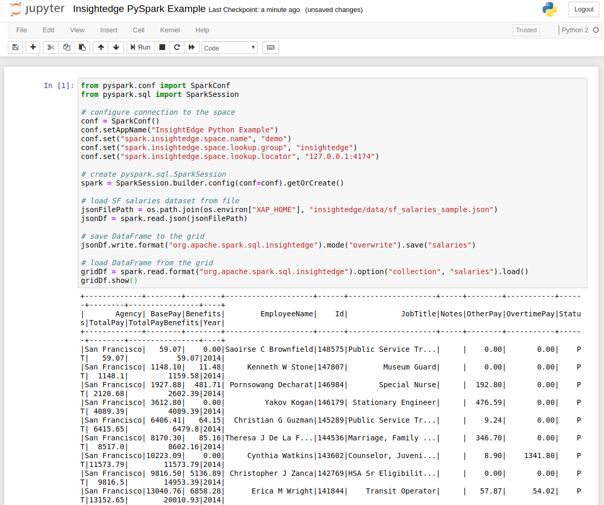

In addition to native support for Apache Zeppelin, which is used primarily by Java and Scala developers, InsightEdge supports integration with the open-source Jupyter web notebook. Programmers can perform data cleaning and transformation, numerical simulation, statistical modeling, data visualization, machine learning, and more on objects in the InsightEdge data grid using PySpark.
This topic describes how to integrate the Jupyter Notebook with
The Jupyter notebook should be installed and included in your system PATH variable.
If you don't have Jupyter installed, refer to the Jupyter documentation for installation instructions.
You need to incorporate the Jupyter web notebook in the
To integrate Jupyter in
Add the following entries to
export PYSPARK_DRIVER_PYTHON=jupyter
export PYSPARK_DRIVER_PYTHON_OPTS='notebook'Add the following entries to
set PYSPARK_DRIVER_PYTHON=jupyter
set PYSPARK_DRIVER_PYTHON_OPTS='notebook'
After you've installed Jupyter and incorporated it within
To run PySpark from the Jupyter dashboard:
Run the following command:
The Jupyter dashboard launches in a browser window that opens at localhost:8888.
Load data from the InsightEdge data grid as shown in the example on the PySpark page, and use the DataFrames API to manipulate the data as necessary.
You can run this sample that loads data from a file and saves it to the demo dataspace.
from pyspark.conf import SparkConf
from pyspark.sql import SparkSession
# configure connection to the space
conf = SparkConf()
conf.setAppName("InsightEdge Python Example")
conf.set("spark.insightedge.space.name", "demo")
conf.set("spark.insightedge.space.lookup.group", "insightedge")
conf.set("spark.insightedge.space.lookup.locator", "127.0.0.1:4174")
# create pyspark.sql.SparkSession
spark = SparkSession.builder.config(conf=conf).getOrCreate()
# load SF salaries dataset from file
jsonFilePath = os.path.join(os.environ["And see the PySpark commands and output within the Jupyter dashboard.
